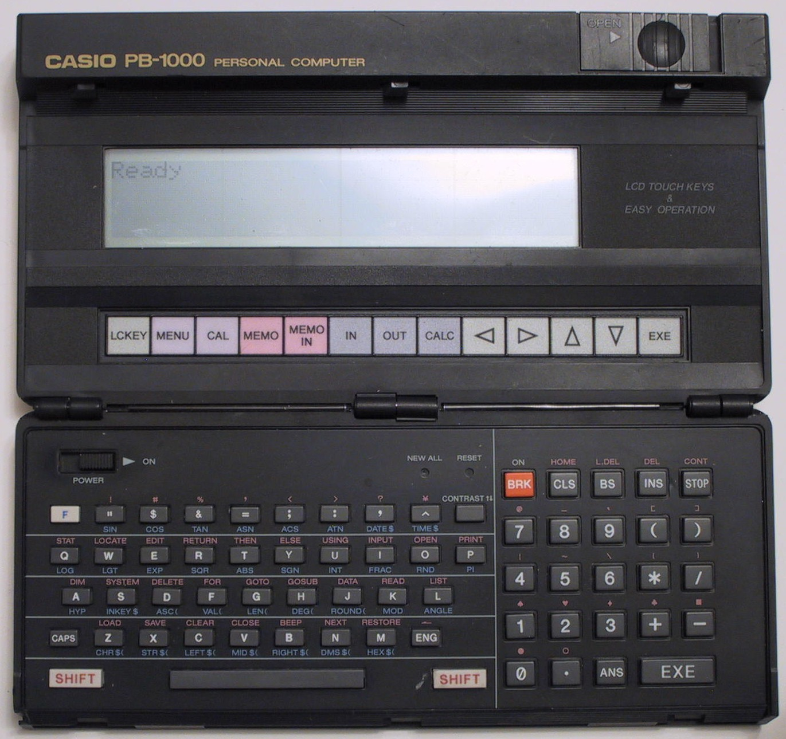

Casio PB-1000
A folding pocket computer with 16 touch zones embedded directly in the LCD

Overview
The Casio PB-1000 was a folding pocket computer released in 1986 in Japan and 1987 internationally. It was Casio's first pocket computer with a touch-sensitive display: a glass-glass resistive digitizer atop a 192×32 pixel monochrome LCD, organized as a 4×4 matrix of 16 touch zones. The touch zones functioned as context-sensitive soft keys — their behavior changed depending on mode, serving as calculation shortcuts, menu navigation, text editing commands, or program selectors. Under the lift-up display sat a full QWERTY keyboard with 64 keys plus 13 dedicated capacitive touch keys. Powered by a custom Hitachi HD61700 CMOS CPU and programmable in both C61 BASIC and assembly language, the PB-1000 represents a brief window when pocket computing experimented with direct screen interaction before styluses and capacitive touch won.
Deep dive
The PB-1000's touch system used a glass-glass resistive digitizer placed on top of the reflective LCD. Two glass layers with transparent conductive coatings were separated by microdot spacers; pressing a touch zone brought the layers into contact, and the CPU polled the resulting X/Y coordinates, mapping them to the 4×4 grid of fixed zone positions. The touch keys were rendered on the LCD as graphical soft keys whose labels and functions changed with context. This was the same fundamental resistive principle used in early ATM and POS touchscreens, miniaturized into a pocket format years before resistive touch became common on PDAs.
The PB-1000's LCD display lifted up from the keyboard base on a hinge, revealing the full QWERTY keyboard underneath. Closed, it measured 187 × 97 × 24 mm and weighed approximately 435g with batteries. The LCD displayed 32 characters × 4 lines (with a virtual 32×8 screen accessible via scrolling). Below the main LCD, a row of 13 dedicated capacitive touch keys provided quick access to common functions — separate from the 16 resistive touch zones on the main display.
The PB-1000 was unusually programmable for a pocket device. It ran Casio's C61 BASIC (JIS C6207) with extensive math, trigonometric, and statistical functions. Memory was managed as a "virtual disk" — multiple BASIC programs, assembly programs, and text files could coexist in RAM. More remarkably, it included a built-in HD61700 assembler: users could type assembly mnemonics directly on the device, assemble the code, and execute it. Casio never publicly released the HD61700 instruction set; the community reverse-engineered it decades later.
A Japan-only variant replaced HD61700 assembly with CASL (COMET Assembler Language) for the COMET educational simulator used in Japanese IT certification exams. It added binary and octal support in BASIC and a [TAB] key while keeping identical hardware.
Despite commercial obscurity, the PB-1000 has one of the richest documentation efforts of any pocket computer. Piotr Piatek (Poland) reverse-engineered the HD61700 CPU, built a Windows emulator, and designed modern USB and solid-state storage replacements. Erich Babitsch (Germany) published "PB-1000 Intern," a fully commented ROM disassembly. Andreas Wichmann maintained a comprehensive homepage. Jun Amano (Japan) runs "PB-1000 Forever." Peripherals included the FA-7 cassette/RS-232/printer interface, the rare MD-100 3.5" floppy drive, and various thermal printers and plotters.
Team & pioneers
- Casio Computer Co., Ltd. Japanese electronics manufacturer. The PB-1000 was developed by Casio's handheld computer team, which also produced the PB-700, PB-770, and later PB-2000. No individual designer names have surfaced in public documentation.
- Hitachi Designed the custom HD61700 CMOS microprocessor, integrating CPU, 32 bytes of internal RAM, and 3 KB of on-die ROM on a single chip.
Media
